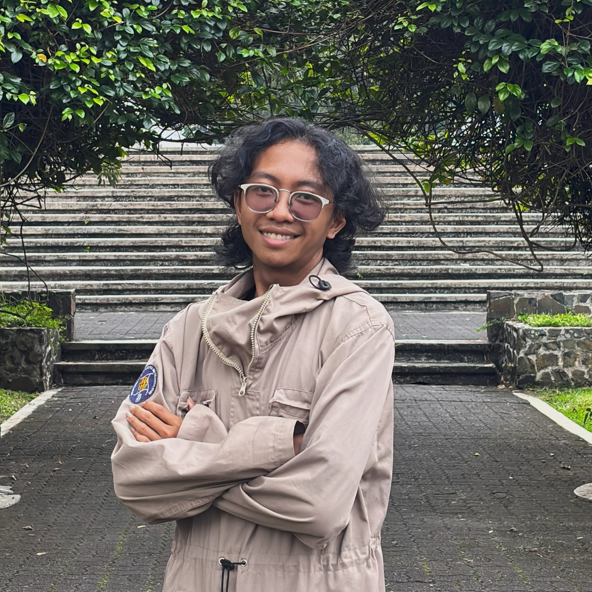
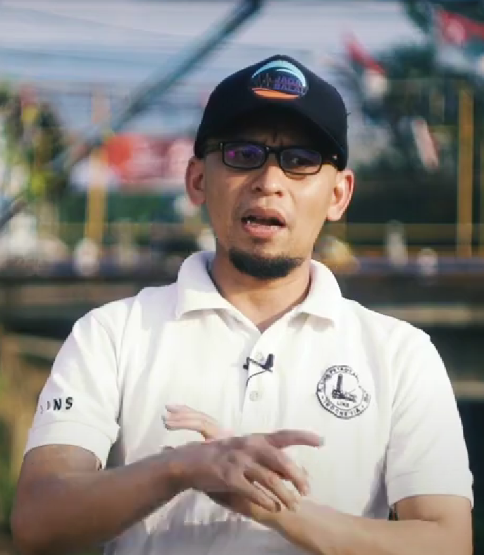
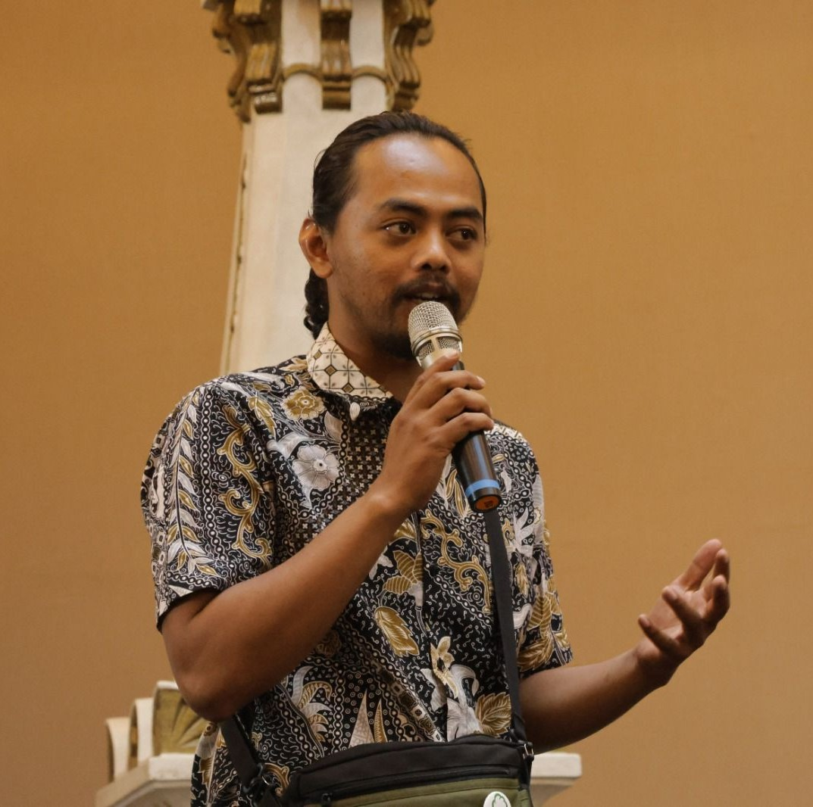
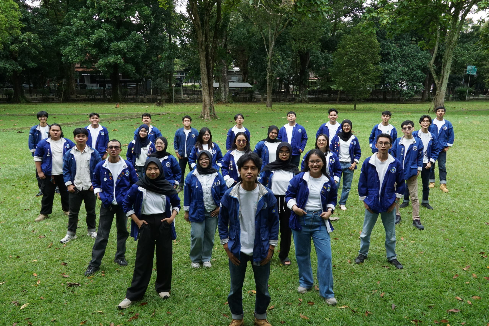

HMME "Atmosphaira" ITB

Pengabdian Masyarakat oleh Badan Semi Otonom (BSO) Zephyrus HMME "Atmosphaira" ITB Periode 2025 hadir sebagai respons konkret terhadap tantangan banjir tahunan di Kecamatan Majalaya. Kami mengembangkan Flood Early Warning System (FEWS) mandiri melalui instalasi satu unit instrumen Z-ONA (Zephyrus-Observasi Nadir Air) tambahan di Jl. Sanding, Kecamatan Paseh. Sistem ini kini merekam dan mentransmisikan data tinggi muka air serta curah hujan secara real-time untuk mendukung kesiapsiagaan warga.
Di ranah sains, kami memperkuat akurasi peringatan dini melalui pengembangan model hidrometeorologi WRF-Hydro. Dengan pemutakhiran data spasial resolusi tinggi (FABDEM dan MODIS IGBP), model ini mampu mensimulasikan respons hidrologi DAS Citarum Hulu dengan lebih presisi, menjadi landasan ilmiah bagi prediksi potensi banjir di masa depan.
Lebih dari sekadar teknologi, program ini menitikberatkan pada manusianya. Melalui Z-INSPACT, kami membersamai komunitas lokal dalam perakitan alat secara mandiri dan membekali pelajar untuk menjadi "Pengamat Cuaca Muda". Integrasi antara infrastruktur teknologi tepat guna dan pemberdayaan masyarakat inilah yang menjadi fondasi kami dalam menciptakan ketangguhan bencana yang berkelanjutan di Majalaya.
— Fauzan Naashirulhaq (Ketua BSO Zephyrus HMME "Atmosphaira" ITB 2025)
"Melalui kepengurusan periode ini, kami berkomitmen untuk menjembatani inovasi sains atmosfer dan hidrologi langsung ke ruang-ruang hidup masyarakat yang paling membutuhkan. Kehadiran instrumen mandiri Z-ONA dan pemodelan hidro-meteorologi di Majalaya bukan sekadar pemenuhan program kerja, melainkan manifestasi nyata dari ilmu yang bergerak memberikan dampak keselamatan nyata."

— Riki Waskito (Tim Pemantau Cuaca - Warga Majalaya)
"Bagi kami warga Majalaya, BSO Zephyrus HMME “Atmosphaira” ITB telah mengambil perannya sebagai kelompok mahasiswa yang peduli dan memberikan perhatiannya kepada Majalaya dengan berkolaborasi dalam menguatkan Sistem Peringatan Dini Partisipatif di tempat tinggal kami. Terpasangnya instrumen-instrumen monitoring berupa kamera pemantau muka air sungai, kamera pemantau cuaca, perekam otomatis muka air sungai dan curah hujan sudah sangat membantu kami untuk memenuhi kebutuhan data yang kami olah untuk bahan peringatan dini banjir sebelum disebarluaskan ke masyarakat disini. BSO Zephyrus membuktikan, bahwa mahasiswa pun tak mau ketinggalan dalam upaya-upaya pengurangan risiko bencana khususnya banjir di wilayah Majalaya dan sekitarnya. Baik berupa pemasangan instrumen monitoring permukaan, maupun dukungan edukasi dalam merawat kesiapsiagaan banjir di Majalaya dan sekitarnya. Hatur nuhun BSO Zephyrus, lanjutkan perjalanan kalian untuk kebermanfaatan ilmu di masyarakat. Sukses untuk semua... Dan salam siaga! ✊🏾🙏🏾"

— Kang Ahdan Syahru R. (Mantan Ketua Yayasan Jaga Balai)
"BSO Zephyrus sudah menjadi bagian dari kami, dengan keterlibatan langsung di Majalaya, BSO Zephyrus memberikan dampak nyata yang mampu menerapkan instrumen untuk memperkuat peringatan dini khususnya banjir 'small actions that make a big impact'."


Labtek XI Kampus Ganesha Institut Teknologi Bandung, Jalan Ganesa No. 10